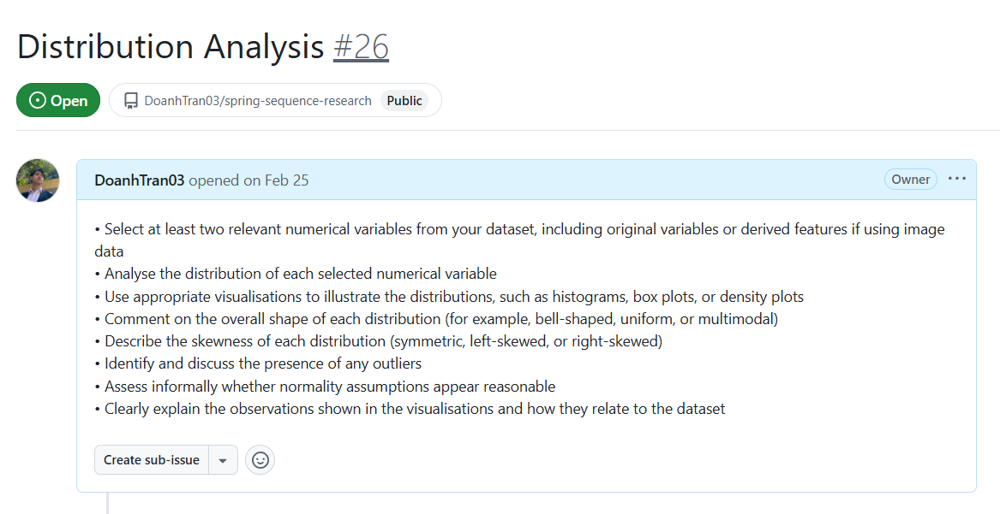
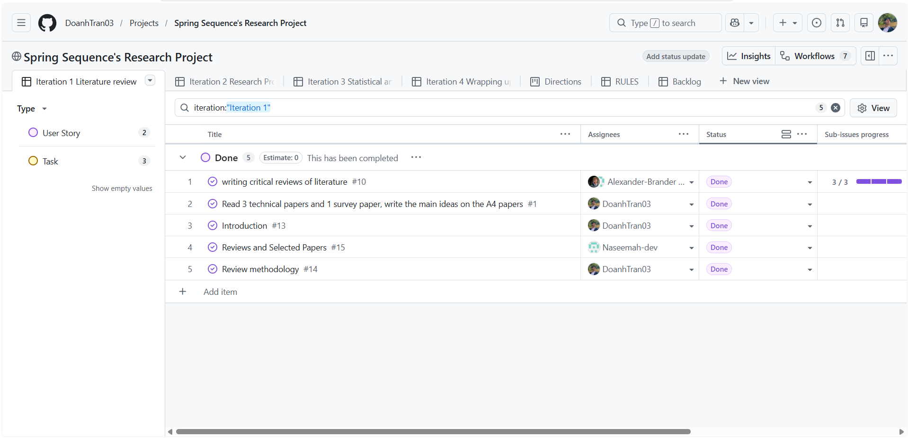

Development and Experience Sharing from Spring Sequence Team
As a believed team from the class, we heard the demand for help and experience sharing. That's the main purpose of this website, we have opened a discussion thread at: RGU Moodle Forum for better support. We will try to answer all of your questions as much as possible.
Team Members: Nosimot Adeyanju, Alexander Brander, Ngoc Doanh Tran
Motivation
This guide documents how our group - Spring Sequence - approached and completed the CMM507 Professional Development and Research Skills coursework. It is not a template to copy. It is a honest account of the process we followed, the mistakes we caught, and the decisions we made at each stage.
If something in your project feels off, the problem usually starts earlier. Use the navigation below to find the phase where things went wrong and work forward from there.

Development Phases
There are four phases in our project development, which corresponds to our project requirement:
- Literature review
- Research proposal
- Statistical analysis
- Wrapping up and Submission
For each phase, we try to align our assigned week one week behind the lecture so that the team members could apply their freshly learned knowledge into the coursework.
Our team agreed on the criteria for each task and we would validate the output at the end, where the task was handed over by the assignee.
Project Management
For project management, we use Github Project. I have learned the project management of the software from this guy: YouTube Tutorial
It does take teammates frequent interaction with the software for better collaboration due to its initial learning curve.
Its complexity in setting up is the trade off for its flexibility. If your team favors a one-go solution, I would recommend using: Trello

Technology and Settings
Technology Used:
- Figma (for PowerPoint slide design - purple/white theme, Spring Sequence branding)
- R / R Markdown (statistical analysis pipeline)
- GitHub Projects (group management, task tracking, and collaboration)
- Microsoft Teams (video recording for presentation)
- Yahoo Finance (dataset source from Kaggle)
For Word, we recommend the following style settings:
- Font: Times New Roman
- Size: 12pt
- Spacing: before: 6pt, after: 6pt
- Line spacing: 1.3
For Figma, here is our palette:
#F3F4F6
Light gray
#5C1862
Dark purple
#7A2182
Medium purple
#A92CB5
Bright magenta
#FFFFFF
White
Rules of Thumb
The linking from research questions, objective and methodology
Research questions, objectives and methodology are the main chain in our project, it tells other reader what is the problem that we are interested in, what would want to do with the problem and what is the methods that we use to solve our need.
Connect & Ask Questions
Have questions about the coursework? Need clarification on any phase? We're here to help! Use the discussion thread we created on RGU Moodle to ask your questions and connect with us.
Go to Discussion Thread